Восстановление металла
Обработка металла¶
Подготовительные работы¶
Подготовительные работы
Подготовка детали кузова автомобиля к ремонту вмятин включает несколько этапов, каждый из которых важен для достижения качественного результата.
-
- Оцените степень повреждения
- Осмотрите поврежденную область. Определите глубину и размер вмятины, а также наличие царапин, трещин или других повреждений. Если есть возможность, проверьте состояние лакокрасочного покрытия вокруг вмятины. Иногда под слоем краски могут скрываться сколы или трещины металла.
-
- Очистка поверхности
- Удалите грязь, пыль и другие загрязнения с помощью моющего средства и воды. Можно использовать мягкую губку или тряпочку. После очистки дайте поверхности высохнуть полностью.
-
- Снятие детали с автомобиля
- Поврежденная деталь может быть не съемной или не съемной. Для проведения качественного ремонта, по возможности, снимите деталь с основного корпуса автомобиля.
- Удалите с детали все мелкие детали (крепеж, вспомогательные элементы и т.д.), пластик, наклейки и т.д.
Список деталей, которые необходимо демонтировать перед ремонтом
При подготовке автомобиля к покраске некоторые детали рекомендуется снять, чтобы обеспечить качественное покрытие и избежать проблем с очисткой в будущем. Перед началом работ необходимо демонтировать:
-
- Бамперы
- Снятие бамперов позволяет покрасить прилегающие участки кузова без риска попадания краски на сам бампер. Кроме того, это дает доступ к скрытым участкам, где могут скапливаться грязь и влага, что важно для предотвращения коррозии.
-
- Решетки радиатора
- Решетка часто имеет сложную форму и труднодоступные места, поэтому её снятие упростит процесс покраски и позволит нанести краску равномерно.
-
- Фары и фонари
- Эти элементы обычно имеют пластиковые или стеклянные вставки, которые могут пострадать при попадании краски. Их демонтаж также облегчит работу с окружающими поверхностями.
-
- Зеркала заднего вида
- Зеркала часто крепятся на дверях, и их снятие позволит покрасить двери целиком, избегая проблемных зон возле зеркал.
-
- Дверные ручки
- Ручки могут мешать равномерному нанесению краски, особенно если они имеют сложные формы. Лучше всего их временно убрать.
-
- Молдинги и декоративные накладки
- Молдинги и накладки часто изготавливаются из пластика или хромированных материалов, которые плохо переносят воздействие краски. Их снятие поможет избежать пятен и подтеков.
-
- Стекла
- Хотя стекла можно заклеить малярным скотчем, их снятие даст больше свободы действий и уменьшит риск попадания краски на стекло. Однако этот этап требует особой аккуратности, так как стекла легко повредить.
-
- Капот и крышка багажника
- Если планируется полная перекраска автомобиля, то капот и крышку багажника тоже стоит снять. Это упростит доступ к внутренним частям этих деталей и улучшит качество покраски.
-
- Колеса
- Колеса можно снять, чтобы покрасить арки колесных ниш и прилегающие части кузова. Также это упрощает работу с нижними частями дверей и порогами.
-
- Внутренние панели и обивка
- Если покраска будет производиться внутри салона (например, при ремонте порогов или стоек), то стоит снять внутренние панели и обивку, чтобы защитить их от попадания краски.
Советы мастера
Важные моменты:
Убедитесь, что у вас есть все необходимые инструменты и материалы для снятия и установки деталей обратно. Некоторые элементы могут требовать специального оборудования или знаний.
Обязательно пометьте снятые детали, чтобы потом было проще собрать автомобиль обратно.
Правильная подготовка и демонтаж нужных деталей значительно улучшат результат покраски и продлят срок службы нового покрытия.
На этом этапе необходимо выполнить следующие работы:
-
- Удалите старое покрытие (при необходимости)
-
- Если на месте вмятины есть старая краска, лак или грунтовка, их нужно удалить. Для этого используют наждачную бумагу с зернистостью P80-P120 и специальный инструмент:
- 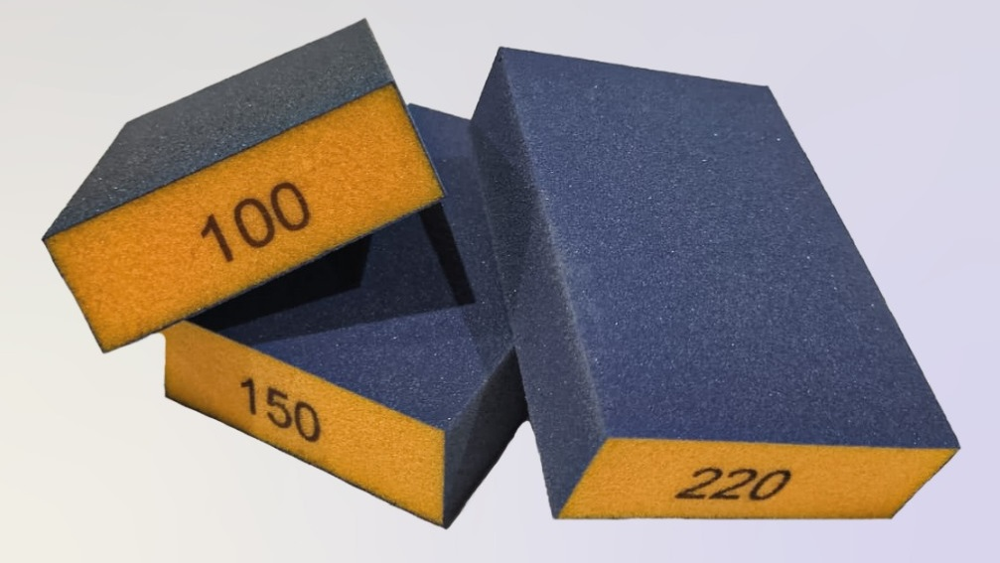 Шлифовальные блоки/шлифовальные губки
- Представляют собой прямоугольные или треугольные бруски с закрепленной на них наждачной бумагой. Удобны для работы с плоскими и угловыми поверхностями.
- 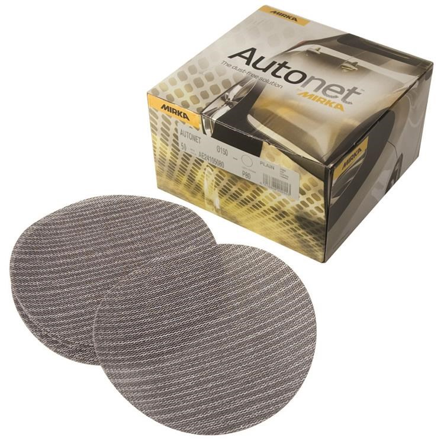 Шлифовальные круги
- Используются вместе с дрелью или болгаркой. Позволяют быстро обработать большие площади металла. Существуют различные типы дисков и кругов: с липучками для быстрой замены наждачки, волокнистые диски для агрессивной шлифовки и мягкие диски для деликатной обработки.
- 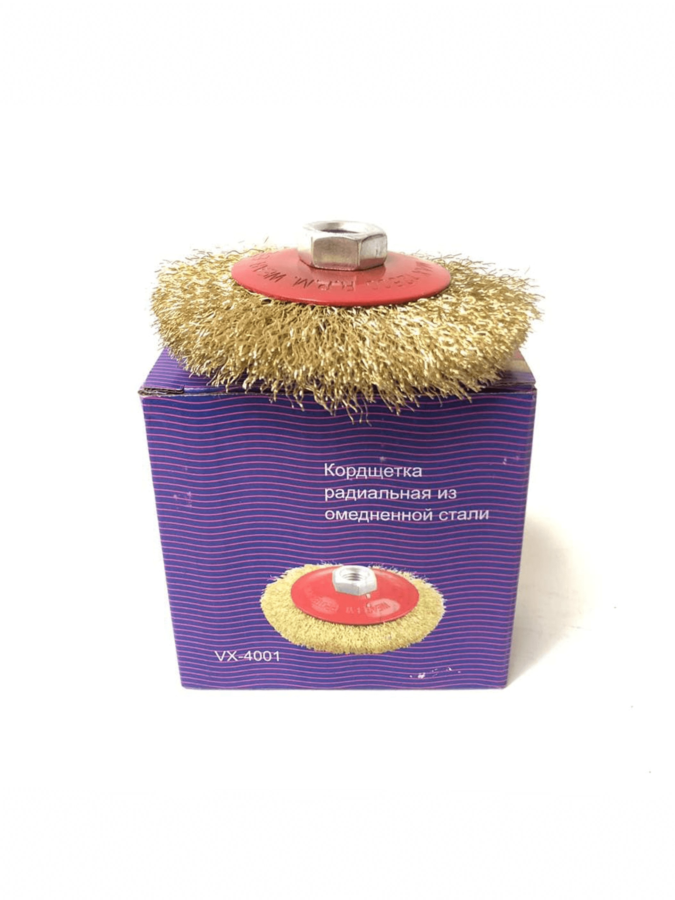 Металлические щётки
- Применяются для удаления ржавчины и старых покрытий. Щетина может быть различной жесткости и формы, что позволяет выбрать подходящий вариант для конкретной задачи.
Шлифовка должна проводиться аккуратно, чтобы не повредить металл слишком сильно.
{kind=link}
{kind=link}
{kind=link}
Каталог материалов
Для выбора необходимого абразивного материала перейдите в каталог
- Выполните рихтовку (выравнивание) поврежденной детали
- 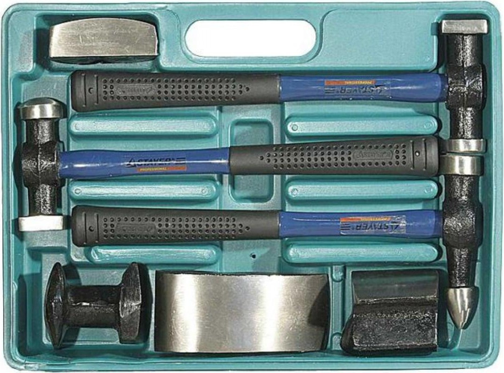 Перед нанесением шпатлевки или другого материала необходимо выровнять поверхность. Это делается с помощью специальных инструментов, таких как молоток с резиновым наконечником, рихтовочные ложки или вакуумный инструмент для удаления вмятин без покраски.
{kind=link}
Постарайтесь максимально приблизить форму поверхности к исходной.
Каталог материалов
Для выбора необходимого рихтовочного оборудования перейдите в каталог
Советы мастера
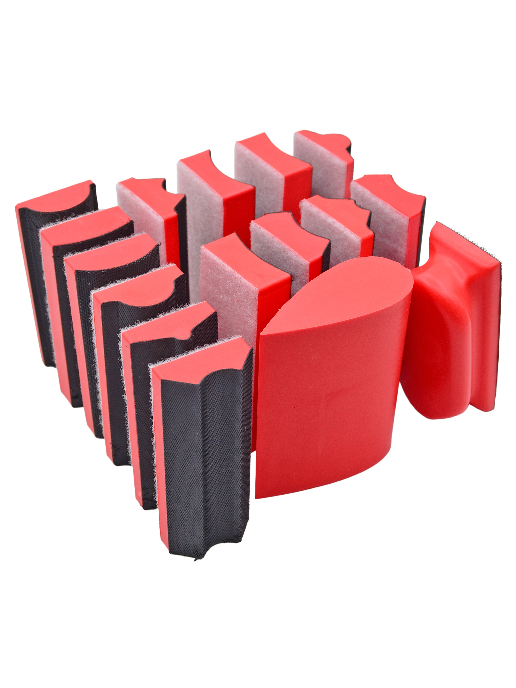 Использование блоков для шлифования металлических поверхностей – это удобный способ обработки металла перед покраской или другими видами отделки. Вот несколько советов, как правильно и эффективно применять эти инструменты:
{kind=link}
-
- Как правильно выбрать блок для шлифования
- Форма: Выберите блок, соответствующий форме обрабатываемой поверхности. Прямоугольные блоки подходят для плоских участков, а треугольные – для углов и сложных форм.
- Материал: Блоки бывают из разных материалов, таких как дерево, пластик или резина. Деревянные блоки прочнее, но могут быстрее изнашиваться, в то время как пластиковые и резиновые более гибкие и долговечные.
- 2. Как закрепляется наждачная бумага на блоке
-
Липучка: Многие современные блоки оснащены липучками для крепления наждачной бумаги. Просто приложите лист наждачки к липучке и слегка прижмите.
Клейкая лента: Если ваш блок не имеет липучек, можно использовать клейкую ленту для фиксации наждачной бумаги. Обмотайте ленту вокруг блока и закрепите края бумаги.
Обезжиривание металлической поверхности перед покраской является важным этапом подготовки, который обеспечивает качественную адгезию краски и долговечность покрытия.
Для работы нам понадобится:
-
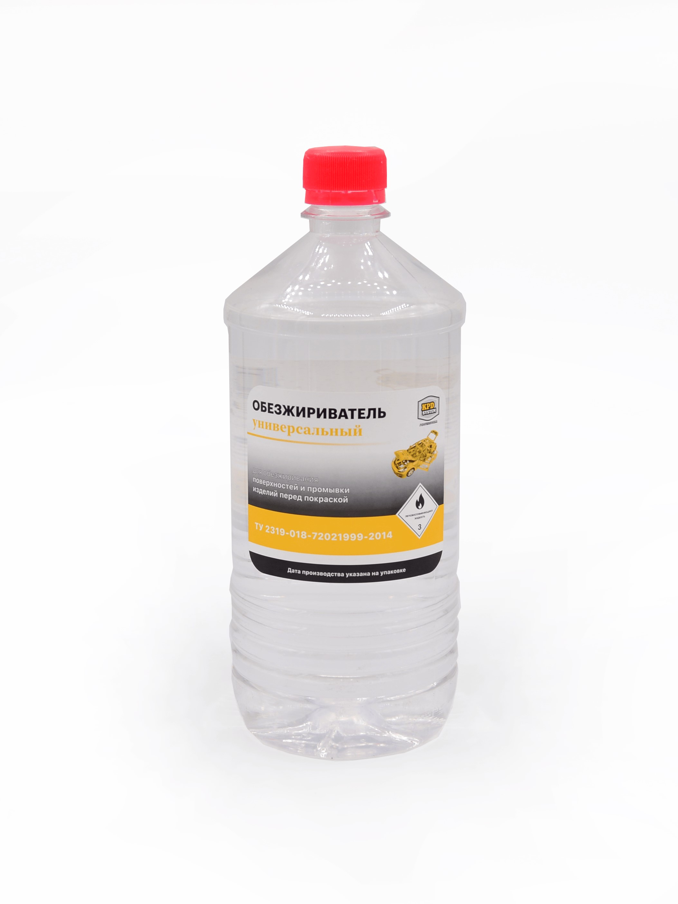 Обезжиривающий раствор (выберите из каталога наиболее подходящий для ваших работ)
-
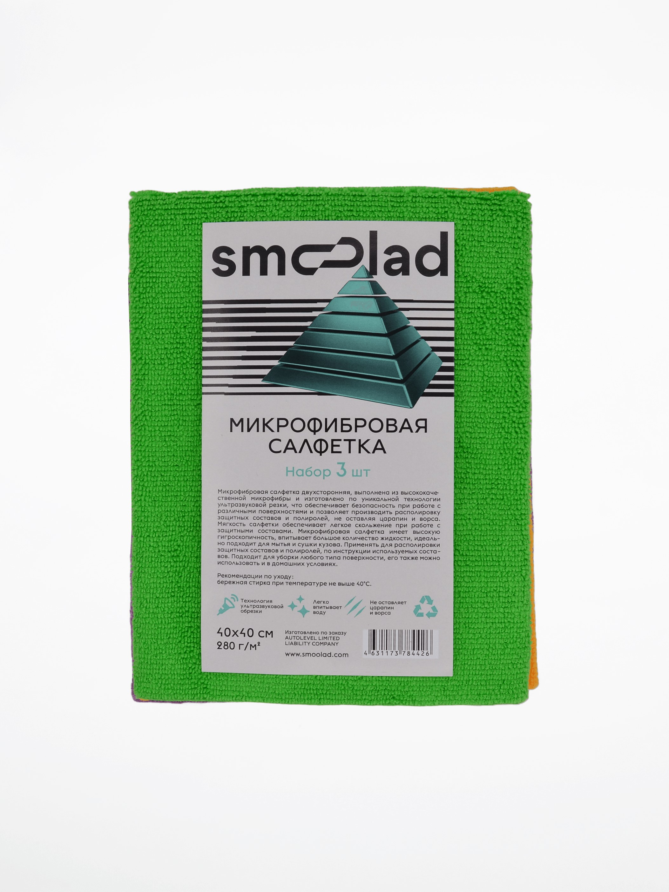 Чистые тряпочки или салфетки
-
Защитные перчатки
-
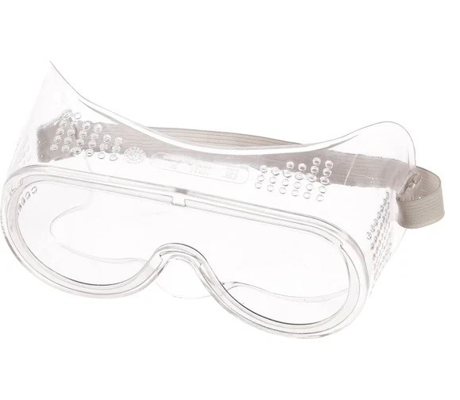 Защитные очки
-
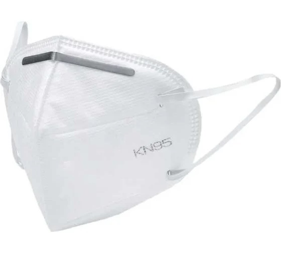 Маска для защиты дыхания
{kind=link}
{kind=link}
{kind=link}
{kind=link}
{kind=link}
С полным списком обезжиривающих составов, средств защиты и салфеток вы сможете ознакомиться в нашем каталоге наиболее подходящий для ваших работ)
- 1. Нанесите обезжиривающее средство
- Смочите чистую тряпочку или салфетку в обезжиривающем растворе. Начните обрабатывать поверхность, двигаясь разнонаправленно или по кругу. Особое внимание уделите углам, краям и другим сложным местам.
- 2. Протрите поверхность второй раз:
-
Возьмите новую чистую тряпочку и снова смочите её в обезжиривателе.
Повторите процедуру, чтобы убедиться, что вся поверхность тщательно очищена.
- 3. Проверьте чистоту поверхности:
- После высыхания убедитесь, что на металле нет следов жира, масла или других загрязнений. Поверхность должна выглядеть сухой и чистой.
- 4. Дайте поверхности высохнуть:
- Оставьте металл на некоторое время, чтобы он полностью высох. Время сушки зависит от используемого обезжиривающего раствора и условий окружающей среды.
5. Переходите к следующему этапу:
Советы мастера
- Используйте качественные обезжиривающие средства. Специализированные составы обеспечат наилучший результат.
- Работайте в хорошо проветриваемом помещении. Обезжиривающие растворы могут выделять вредные пары.
- Не прикасайтесь к обезжиренной поверхности руками. Жир с кожи может снова загрязнить металл.
- Если используете воду для промывки, убедитесь, что поверхность полностью сухая перед дальнейшими работами.
Соблюдение этих рекомендаций поможет вам получить идеальную поверхность для покраски, что обеспечит долгий срок службы покрытия и его эстетичный вид.
Шпатлевка¶
Шпатлевка
Технология использования конструкционной шпатлёвки для ремонта металлических деталей автомобиля предполагает поэтапное выполнение определённых операций. Этот метод применяется для восстановления повреждённых участков кузова, устранения вмятин, заделывания глубоких царапин и прочих дефектов.
Что такое конструкционная шпатлевка
Конструкционная шпатлёвка: Используется для восстановления геометрии и структуры повреждённых металлических деталей. Она обладает высокой прочностью и твёрдостью, что делает её подходящей для заделывания глубоких вмятин, пробоин и серьёзных деформаций.
- Содержит стекловолокно, алюминиевые частицы или другие добавки, повышающие прочность и устойчивость к механическим воздействиям. Такие шпатлёвки часто называют "усиленными".
- Обладает высокой механической прочностью и устойчивостью к ударам и вибрациям. Она способна выдерживать значительные нагрузки, что делает её идеальным выбором для ремонта структурных элементов кузова.
- Хорошо сцепляется с металлическими поверхностями благодаря своему составу. Это важно при восстановлении повреждённых участков, где требуется высокая прочность соединения.
- Из-за своей прочности сложнее шлифуется, требуя большего усилия и времени. Однако это компенсируется её способностью сохранять форму даже при значительных нагрузках.
- Используется на начальных этапах ремонта, когда необходимо восстановить структуру и форму повреждённой детали. Например, при заделывании глубоких вмятин или устранении пробоин.
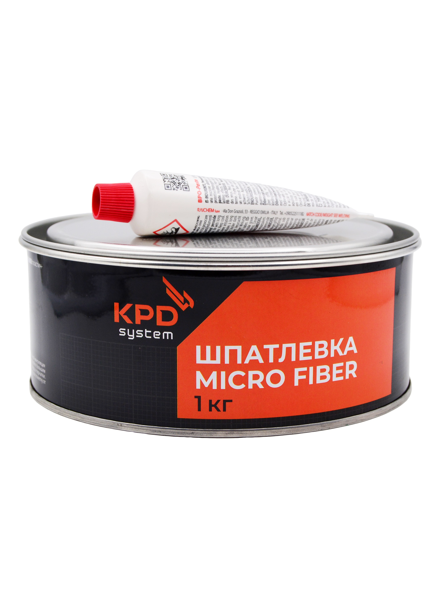 Полиэфирная шпатлевка на основе ненасыщенной полиэфирной смолы, с тиксотропным составом, которая содержит специальное стекловолокно и обладает большой заполняющей способностью, а также консистенцией, которая позволяет легко наносить.
{kind=link}
Его усовершенствованная формула обеспечивает отличную адгезию к металлическим и гальваническим поверхностям.
Шпатлевка, пригодная как для влажного, так и для сухого шлифования, обеспечивает максимальный комфорт пользователя во время нанесения.
Благодаря специально разработанной смоле шпатлевка имеет длительный срок хранения и оставляет нелипкую поверхность с быстрым отверждением даже при низких температурах. Полиэфирная MICROFIBER образует поверхности без отверстий.
Выбрать шпатлевку
Для различных задач подбирайте соответствующие шпатлевки. С полным спектром шпатлевок вы можете ознакомиться в нашем каталоге
- Подготовьте шпатлёвочную смесь согласно инструкции производителя. Обычно она состоит из двух компонентов: самой шпатлёвки и отвердителя.
- Тщательно перемещайте компоненты шпатлевки с помощью шпателя или механического миксера. Добейтесь однородной консистенции.
Внимание
Время рабочего состояния шпатлевок ограничено, старайтесь использовать сразу весь раствор.
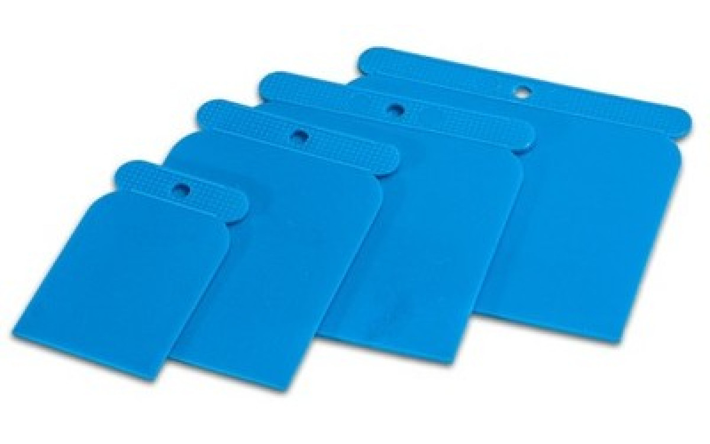 3. Нанесите шпатлевку с помощью специальных шпателей или ракелей. С полным спектром шпателей вы можете ознакомиться в нашем каталоге
{kind=link}
- Дайте шпатлёвке полностью высохнуть. Время высыхания зависит от типа шпатлёвки и условий окружающей среды (обычно около 20–30 минут).
Советы мастера
Конструкционная шпатлёвка отличается от мягкой прежде всего своими физическими свойствами: она прочнее, тверже и предназначена для восстановления геометрической целостности деталей. Мягкая шпатлёвка, напротив, более эластична и удобна для финишной обработки поверхности перед покраской. Правильный выбор шпатлёвки в зависимости от характера повреждения играет ключевую роль в обеспечении качества и долговечности ремонта автомобильного кузова.
Технология использования мягкой шпатлёвки для ремонта металлических деталей автомобиля предполагает поэтапное выполнение определённых операций. Применяется для финишной обработки поверхности, устранения мелких дефектов, таких как царапины, небольшие вмятины и неровности.
Что такое мягкая шпатлевка
Мягкая шпатлёвка: Применяется для финишной обработки поверхности, устранения мелких дефектов, таких как царапины, небольшие вмятины и неровности. Она легче наносится и шлифуется, чем конструкционная шпатлёвка.
- Мягкая шпатлёвка: Основой служит полиэфирная смола, которая обеспечивает эластичность и лёгкость обработки. В состав могут входить пластификаторы и наполнители, улучшающие адгезию и удобство применения.
- Мягкая шпатлёвка: Менее прочная, чем конструкционная, но достаточно эластична, чтобы компенсировать небольшие деформации и вибрации. Её основное назначение — создание гладкой и ровной поверхности перед покраской.
- Обеспечивает хорошую адгезию к различным материалам, включая металл, пластик и старую краску. Она легко наносится и распределяется по поверхности, создавая ровный слой.
- Легко шлифуется, позволяя быстро и точно выровнять поверхность. Это делает её удобной для финишной обработки перед покраской.
- Применяется на завершающих стадиях ремонта для устранения мелких дефектов и создания гладкой поверхности перед покраской. Она идеально подходит для финишной доводки и подготовки к нанесению краски.
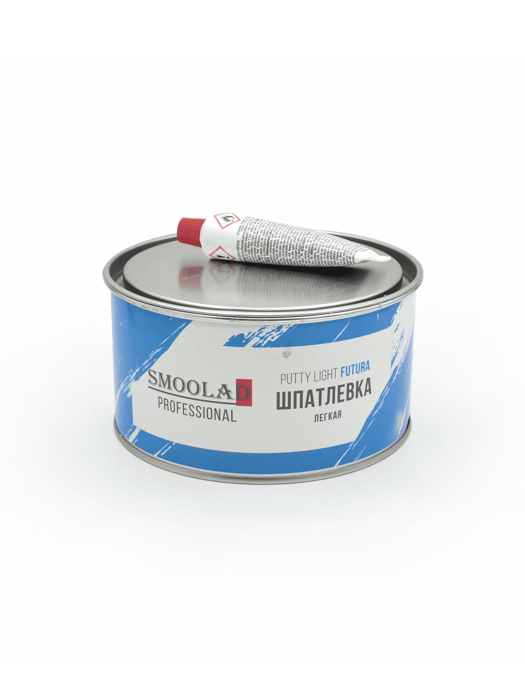 FUTURA - Универсальная сверхлегкая полиэфирная шпатлевка с наполнителем из микросфер.
{kind=link}
Применяется на любых поверхностях, обеспечивает высокое качество при больших и малых ремонтных работах. Легко наносится.
Очень легко шлифуется.
Высокая эластичность шпатлевки способствует эффективной защите отделочного покрытия при механическом воздействии. Очень низкий удельный вес обеспечивает, в сравнении с традиционными шпатлевками, значительно меньший расход продукта по весу.
В отличие от конкурентов имеет меньше пор и легче наносится.
Выбрать шпатлевку
Для различных задач подбирайте соответствующие шпатлевки. С полным спектром шпатлевок вы можете ознакомиться в нашем каталоге
- Подготовьте шпатлёвочную смесь согласно инструкции производителя. Обычно она состоит из двух компонентов: самой шпатлёвки и отвердителя.
- Тщательно перемещайте компоненты шпатлевки с помощью шпателя или механического миксера. Добейтесь однородной консистенции.
Внимание
Время рабочего состояния шпатлевок ограничено, старайтесь использовать сразу весь раствор.
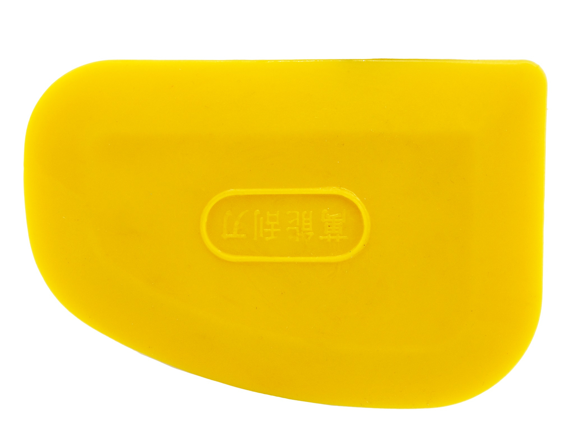
3. Нанесите шпатлевку с помощью специальных шпателей или ракелей. С полным спектром шпателей вы можете ознакомиться в нашем каталоге
{kind=link}
- Дайте шпатлёвке полностью высохнуть. Время высыхания зависит от типа шпатлёвки и условий окружающей среды (обычно около 20–30 минут).
Советы мастера
Особенности и рекомендации:
- Работайте в чистом помещении: Чтобы избежать попадания пыли и мусора в свеженанесённую шпатлёвку, проводите ремонтные работы в чистом, хорошо проветриваемом помещении.
- Защищайте окружающие поверхности: Закройте прилегающие участки автомобиля малярным скотчем и плёнкой, чтобы избежать случайного попадания шпатлёвки на неповрежденные зоны.
- Соблюдайте технику безопасности: Надевайте защитные очки, перчатки и респиратор, особенно при работе с химическими веществами и шлифованием.
Следуя этим рекомендациям, вы сможете успешно применить лёгкую шпатлёвку для ремонта металлических деталей автомобиля, обеспечив качественный и долговечный результат.
Абразивная обработка 1¶
Абразивная обработка 1
Сухая проявка — это метод контроля качества шпатлеванных поверхностей перед последующей покраской. Он позволяет выявить недостатки и неровности, которые могут быть незаметны визуально. Основная идея заключается в использовании специального порошка или аэрозоля, который контрастирует с поверхностью и помогает обнаружить дефекты.
Для выполнения работ нам понадобится:
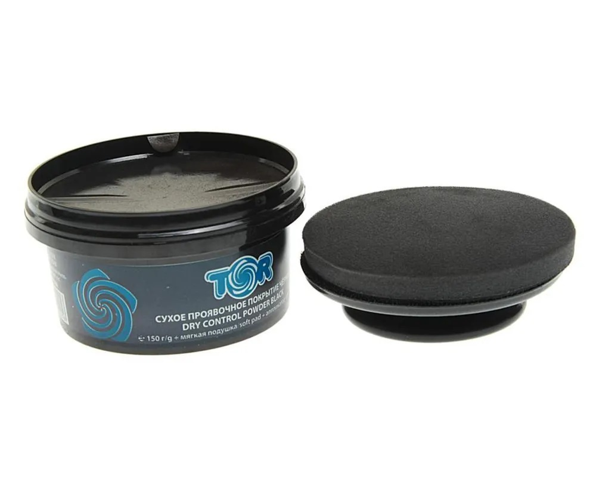 TOR Сухое проявочное покрытие с подушкой-аппликатором и держателем подушки-аппликатора черное 150гр
{kind=link}
Предназначено для выявления дефектов на поверхности грунтов или шпатлевок светлых цветов.
Не содержит растворителей, легко наносится на поверхность, не забивает абразив. Совместимо со средствами для сухой и влажной шлифовки.
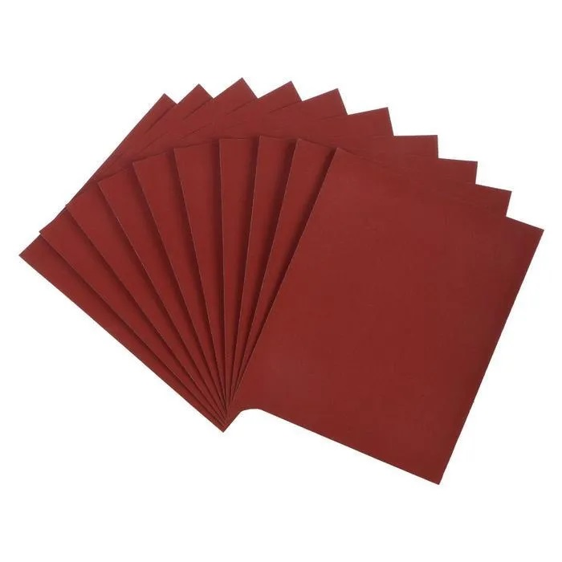 Наждачная бумага (P150–P220) и бруски для крепления наждачной бумаги. Перед каждым тестом сухой проявки необходимо выполнять выравнимвание шпатлевки на ремонтируемой детали.
{kind=link}
- 1. Выполните предварительную шлифовку шпатлевки:
- Проведите предварительную шлифовку шпатлёванной поверхности наждачной бумагой средней зернистости (P150–P220), чтобы удалить излишки шпатлёвки и выровнять поверхность.
2. Нанесите проявляющий порошок
Выберите из каталога
Для удобства работы у нас в наличии всегда есть сухие проявочные покрытия разных цветов, с полным перечнем вы можете ознакомиться в нашем каталоге
Используйте специальный проявляющий порошок или аэрозоль, предназначенный для этих целей. Порошок может быть чёрного, белого или флуоресцентного цвета, в зависимости от цвета подложки.
3. Равномерно распылите порошок на поверхность, покрывая весь участок. Важно, чтобы слой был тонким и равномерным.
- 4. Осмотрите поверхность под различными углами освещения.
- Порошок выявит все неровности и дефекты, которые будут видны как тени или светлые пятна.
- 5. Выполните коррекцию
- Если обнаруживаются дефекты, такие как впадины, бугры или царапины, отметьте их маркером для последующего исправления.
- 6. Исправление дефектов
- Выполните дополнительную шпатлёвку: Заполните отмеченные впадины дополнительной шпатлёвкой, следя за тем, чтобы слой был минимальным.
7. Выполните ручную шлифовку: После высыхания шпатлёвки повторно отшлифуйте поверхность, используя наждачную бумагу средней зернистости (P150–P220).
8. Выполните повторную проверку Повторное нанесение порошка: (как в пункте 3). Нанесите проявляющий порошок снова и проверьте поверхность на наличие оставшихся дефектов.
- 9. Удалите остатки проявочного порошка
- Удалите оставшийся порошок с поверхности с помощью сжатого воздуха или мягкой ткани. Убедитесь, что поверхность полностью очищена перед следующими этапами.
Обезжиривание металлической поверхности перед покраской является важным этапом подготовки, который обеспечивает качественную адгезию краски и долговечность покрытия.
Для работы нам понадобится:
-
Обезжиривающий раствор (выберите из каталога наиболее подходящий для ваших работ)
-
Защитные перчатки
С полным списком обезжиривающих составов, средств защиты и салфеток вы сможете ознакомиться в нашем каталоге наиболее подходящий для ваших работ)
- 1. Нанесите обезжиривающее средство
- Смочите чистую тряпочку или салфетку в обезжиривающем растворе. Начните обрабатывать поверхность, двигаясь разнонаправленно или по кругу. Особое внимание уделите углам, краям и другим сложным местам.
- 2. Протрите поверхность второй раз:
-
Возьмите новую чистую тряпочку и снова смочите её в обезжиривателе.
Повторите процедуру, чтобы убедиться, что вся поверхность тщательно очищена.
- 3. Проверьте чистоту поверхности:
- После высыхания убедитесь, что на металле нет следов жира, масла или других загрязнений. Поверхность должна выглядеть сухой и чистой.
- 4. Дайте поверхности высохнуть:
- Оставьте металл на некоторое время, чтобы он полностью высох. Время сушки зависит от используемого обезжиривающего раствора и условий окружающей среды.
5. Переходите к следующему этапу:
Советы мастера
- Используйте качественные обезжиривающие средства. Специализированные составы обеспечат наилучший результат.
- Работайте в хорошо проветриваемом помещении. Обезжиривающие растворы могут выделять вредные пары.
- Не прикасайтесь к обезжиренной поверхности руками. Жир с кожи может снова загрязнить металл.
- Если используете воду для промывки, убедитесь, что поверхность полностью сухая перед дальнейшими работами.
Соблюдение этих рекомендаций поможет вам получить идеальную поверхность для покраски, что обеспечит долгий срок службы покрытия и его эстетичный вид.
Шлифовка шпатлёвки с помощью шлифовальной машины — важный этап в процессе ремонта автомобиля, который требует внимания к деталям и соблюдения технологии. Правильно выполненная шлифовка гарантирует ровную и гладкую поверхность, готовую к последующему нанесению грунтовки и краски.
Если, после выполненных тестов сухой проявки дефекты отсутствуют, выполните окончательную шлифовку поверхности, используя мелкозернистую наждачную бумагу (P600–P800), чтобы добиться идеальной гладкости.
Для данного этапа нам понадобится:
- Механическая шлифовальная машина (электро или пневмо)
- Наждачная бумага (P600–P800)
- Средства индивидуальной защиты: очки, перчатки, защитный костюм
Выберите из каталога
Средства индивидуальной защиты и наждачную бумагу вы можете выбрать у нас. С полным перечнем вы можете ознакомиться в нашем каталоге
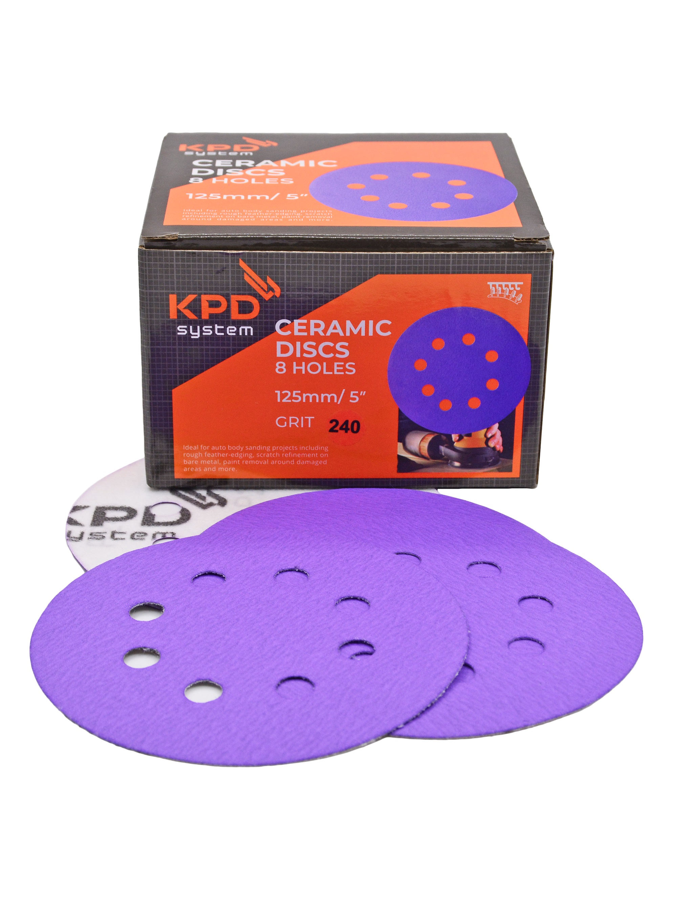 1. Подготовьте шлифовальную машину с соответствующими насадками и абразивными кругами. Выбирайте круги с зернистостью, соответствующей типу шпатлёвки и стадии шлифовки.
{kind=link}
2. Используйте редства защиты: Наденьте защитные очки, маску и перчатки, чтобы защитить себя от пыли и мелких частиц. Убедитесь, что рабочее место хорошо освещено и оборудовано системой пылеудаления, если это возможно.
3. Выполните шлифовку Держите машину двумя руками и медленно перемещайте её по поверхности, делая плавные движения вперёд-назад или по кругу. Следите за тем, чтобы давление было равномерным, чтобы избежать перегрева поверхности и появления углублений.
4. Выполните регулярно контроль Регулярно останавливайтесь и проверяйте поверхность на наличие дефектов. Если появляются глубокие царапины или борозды, уменьшите давление и переключитесь на менее агрессивный абразив.
5. Удалите пыль и остатки шпатлёвки с поверхности с помощью сжатого воздуха или мягкой ткани.
Советы мастера
- Не торопитесь: Шлифовка — это медленный и кропотливый процесс. Не спешите, чтобы избежать ошибок и необходимости переделывать работу.
- Регулярная смена абразивных кругов: Меняйте круги по мере износа, чтобы обеспечить эффективное удаление материала и избежать царапин.
- Контролируйте температуру: Избегайте длительного шлифования одного участка, чтобы не перегревать поверхность и не вызывать деформации металла.
- Используйте направляющие: При необходимости используйте специальные направляющие или шаблоны, чтобы контролировать толщину снимаемого слоя.
Выполнение этих шагов поможет вам качественно отшлифовать шпатлёванные поверхности при ремонте автомобиля, обеспечивая идеальное основание для дальнейших работ.
Подготовка грунта¶
Подготовка грунта
- Снимите деталь с автомобиля
- Удалите с детали все мелкие детали, пластик, наклейки и т.д.
Внимание!
Обязательно удалите все посторонние предметы и вещества не относящиеся к детали
- Снимите деталь с автомобиля
- Удалите с детали все мелкие детали, пластик, наклейки и т.д.
Внимание!
Обязательно удалите все посторонние предметы и вещества не относящиеся к детали
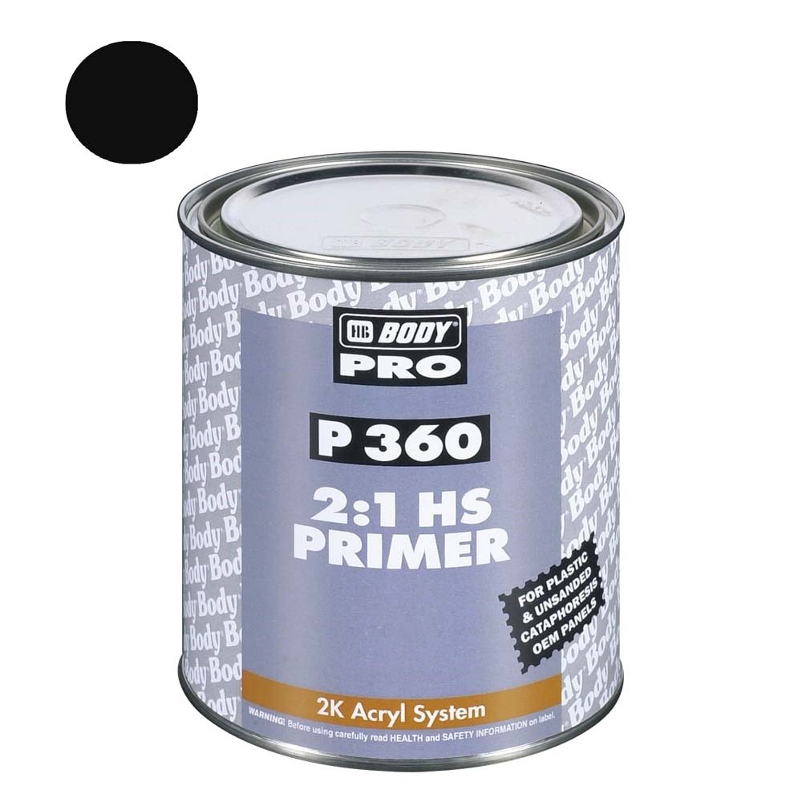 ГРУНТ-НАПОЛНИТЕЛЬ АКРИЛОВЫЙ МНОГОФУНКЦИОНАЛЬНЫЙ ИЗНОСОСТОЙКИЙ HS 2К
{kind=link}
Имеет идеальную адгезию к неотшлифованной заводской панели O.E.M., а также ко всем видам металла и пластика: PE-PP-ABS-TSOP и другие (пластики шлифовать абразивом Р180–Р220).
Высококачественный акриловый грунт для частичной и полной отделки автомобиля.
Может наноситься тонким, средним или толстым слоем с промежуточным шлифованием. Позволяет применять метод «мокрый по мокрому». Отличная наполняемость и растекаемость по поверхности гарантируют исключительный результат.
ПРЕДУПРЕЖДЕНИЕ:
При использовании акселератора HB BODY PRO A715 TURBO AX время жизнеспособности смеси значительно уменьшается, поэтому материал должен применяться немедленно.
- Смешивайте компоненты в правильной пропорции (для каждого типа грунта указана пропорция для смешивания компонентов), указанной на упаковке. Перемешивайте до однородной массы с помощью ручного или электрического миксера.
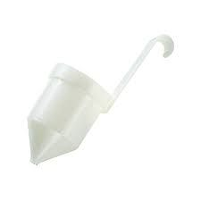 3. Проверьте вязкость грунтовой смеси в соответствии с требованиями указанными в способе применения грунта. Для проверки вязкости используется специальный инструмент Вискозиметр. Для определения вязкости грунта или лакокрасочных изделий в секундах по времени истечения 100 мл краски через отверстие диаметром 4 мм.
{kind=link}
- Наносите шпатлёвку шпателем, стараясь заполнить все углубления и выровнять поверхность. Действуйте аккуратно, чтобы избежать образования излишков и пузырей.
{kind=link}
- При заполнении мелких трещин и царапин пользуйтесь специальными аппликаторами (микрокисточками).
Микрокисточки выгодно отличаются конусообразной формой рабочей поверхности, что позволяет точнее наносить ЛКМ.
Используются для:
- Подкраски сколов и царапин
- Микроремонта
Нанесение грунта¶
Грунтование
- Снимите деталь с автомобиля
- Удалите с детали все мелкие детали, пластик, наклейки и т.д.
Внимание!
Обязательно удалите все посторонние предметы и вещества не относящиеся к детали
- Снимите деталь с автомобиля
- Удалите с детали все мелкие детали, пластик, наклейки и т.д.
Внимание!
Обязательно удалите все посторонние предметы и вещества не относящиеся к детали
Абразивная обработка 2¶
Абразивная обработка 2
- Снимите деталь с автомобиля
- Удалите с детали все мелкие детали, пластик, наклейки и т.д.
Внимание!
Обязательно удалите все посторонние предметы и вещества не относящиеся к детали
- Снимите деталь с автомобиля
- Удалите с детали все мелкие детали, пластик, наклейки и т.д.
Внимание!
Обязательно удалите все посторонние предметы и вещества не относящиеся к детали
- Снимите деталь с автомобиля
- Удалите с детали все мелкие детали, пластик, наклейки и т.д.
Внимание!
Обязательно удалите все посторонние предметы и вещества не относящиеся к детали
Подготовка к покраске¶
Подготовка к покраске
- Снимите деталь с автомобиля
- Удалите с детали все мелкие детали, пластик, наклейки и т.д.
Внимание!
Обязательно удалите все посторонние предметы и вещества не относящиеся к детали
- Снимите деталь с автомобиля
- Удалите с детали все мелкие детали, пластик, наклейки и т.д.
Внимание!
Обязательно удалите все посторонние предметы и вещества не относящиеся к детали
- Снимите деталь с автомобиля
- Удалите с детали все мелкие детали, пластик, наклейки и т.д.
Внимание!
Обязательно удалите все посторонние предметы и вещества не относящиеся к детали
Покраска детали¶
Покраска детали
- Снимите деталь с автомобиля
- Удалите с детали все мелкие детали, пластик, наклейки и т.д.
Внимание!
Обязательно удалите все посторонние предметы и вещества не относящиеся к детали
- Снимите деталь с автомобиля
- Удалите с детали все мелкие детали, пластик, наклейки и т.д.
Внимание!
Обязательно удалите все посторонние предметы и вещества не относящиеся к детали
- Снимите деталь с автомобиля
- Удалите с детали все мелкие детали, пластик, наклейки и т.д.
Внимание!
Обязательно удалите все посторонние предметы и вещества не относящиеся к детали
Финишная обработка¶
Финишная обработка
- Снимите деталь с автомобиля
- Удалите с детали все мелкие детали, пластик, наклейки и т.д.
Внимание!
Обязательно удалите все посторонние предметы и вещества не относящиеся к детали
- Снимите деталь с автомобиля
- Удалите с детали все мелкие детали, пластик, наклейки и т.д.
Внимание!
Обязательно удалите все посторонние предметы и вещества не относящиеся к детали
- Снимите деталь с автомобиля
- Удалите с детали все мелкие детали, пластик, наклейки и т.д.
Внимание!
Обязательно удалите все посторонние предметы и вещества не относящиеся к детали